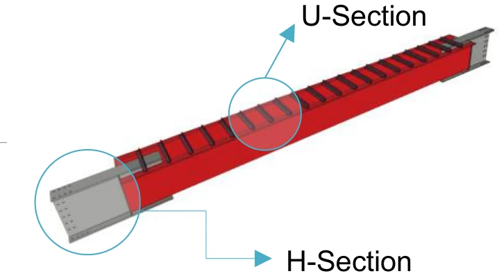
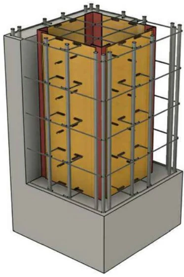
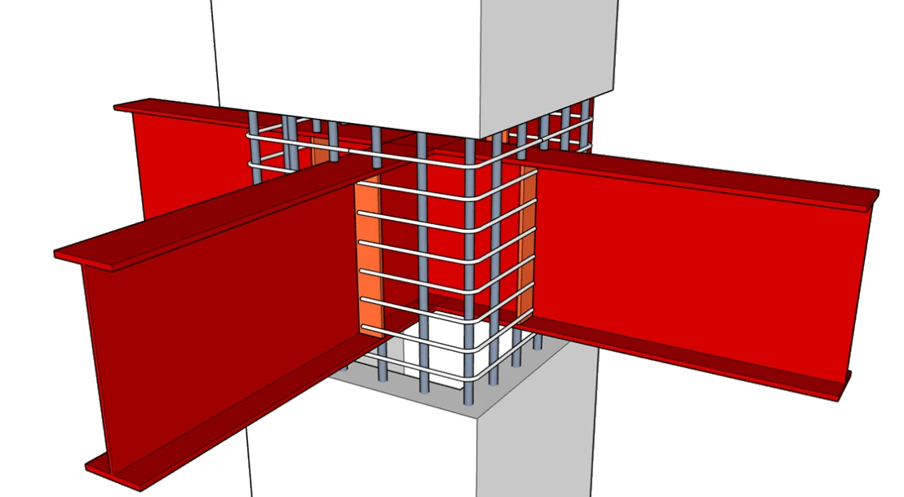

합성보와 중공PC기둥,
접합부에서 하나로.
별도의 수직 H형강 기둥 없이 하중경로를 확보하고, 반복가력 실험으로 성능을 확인했습니다.
왜 접합부인가
장스팬·고하중 산업건축은 보의 효율과 기둥의 경량화를 동시에 요구합니다. 그러나 두 시스템 사이의 하중전달이 불명확하면, 각 공법의 장점은 구조 시스템으로 이어지지 않습니다.

01
합성보
단부 H형강의 접합성
중앙 U형 단면의 경제성
중앙 U형 단면의 경제성

02
중공PC기둥
중공화로 자중 절감
내·외부 이중 횡구속
내·외부 이중 횡구속

03
접합부
브라켓–주철근–띠철근
하중경로 통합
하중경로 통합
핵심 개발 질문
“중공부 내부에 별도의 수직 H형강 기둥 없이도,
시공성과 내진성능을 동시에 확보할 수 있는가?”
시공성과 내진성능을 동시에 확보할 수 있는가?”
해법
주철근과 용접커플러로 연결되는 강재 브라켓 + 접합부 전 구간의 띠철근 정착